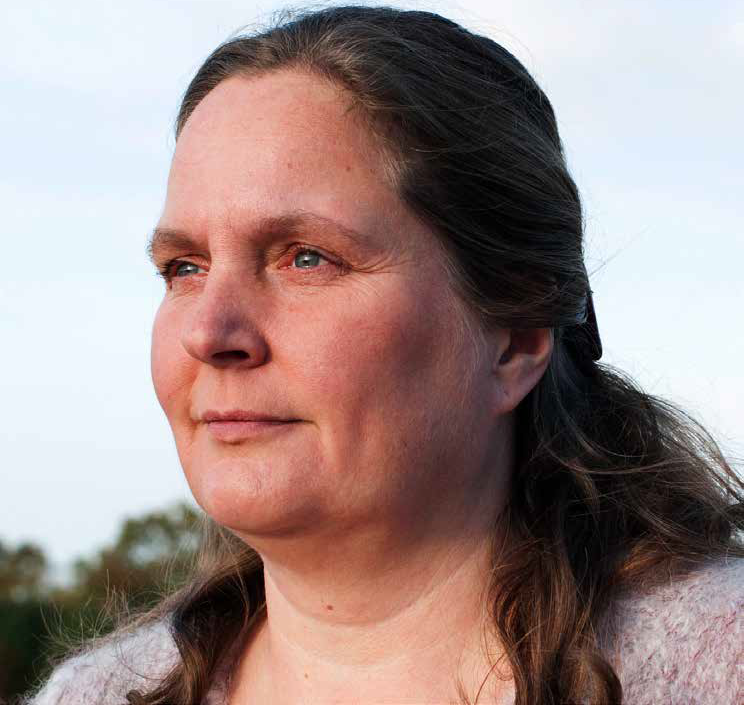

Pacienti so ťažkou eozinofilnou astmou môžu mať odlišné potreby3
-
ČASTÉ EXACERBÁCIE
VEK: 52 ROKOVZDRAVOTNÁ ANAMNÉZA
- Diagnostikovaná astma vo veku 28 rokov
- 3 exacerbácie za posledný rok, 2 vyžadujúce hospitalizáciu, žiadne intubácie
- Počet eozinofilov: 428 buniek/μl
- Celkový IgE: 140 kU/l
Prestala som plávať, pretože
sa skutočne bojím, že v bazéne
dostanem astmatický záchvat.+ -
KOMORBIDITA - NOSOVÁ POLYPÓZA
VEK: 43 ROKOVZDRAVOTNÁ ANAMNÉZA
- Diagnostikovaná astma vo veku 18 rokov
- Prítomnosť ?
- Pozitívny atopický stav
- 2 exacerbácie za posledný rok
- Eosinophil count: 324 cells/μL
Mám neustále pocit upchatého
nosa a astma mi sťažuje spánok
v noci.+ -

VYŽADUJE OKS
VEK: 47 ROKOVZDRAVOTNÁ ANAMNÉZA
- Diagnostikovaná astma vo veku 29 rokov
- 2 exacerbácie v predchádzajúcich 12 mesiacoch (ambulantné, liečené vysokými dávkami OCS, 1 hospitalizácia za posledný rok)
- Počet eozinofilov: 557 buniek/μl
- Celkový IgE: 114 kU/l
- Momentálne užíva OCS 12,5 mg (denne,
Mám obavy z vedľajších
účinkov steroidov – už som
pribrala na váhe.+ -
PEDIATRICKÝ PACIENT (≥ 6 ROKOV)
VEK: 10 ROKOVZDRAVOTNÁ ANAMNÉZA
- Diagnostikovaná astma vo veku 6 rokov
- 2 exacerbácie za posledný rok
- Počet eozinofilov: 370 buniek/μl
- Celkový IgE: 148 kU/l
Nepáči sa mi, že sa nemôžem
hrať vonku s priateľmi, pretože
moja mama sa obáva, že
dostanem astmatický záchvat.+
IgE – imunoglobulín E, OKS – perorálny kortikosteroid
Nucala nie je indikovaná na nosovú polypózu